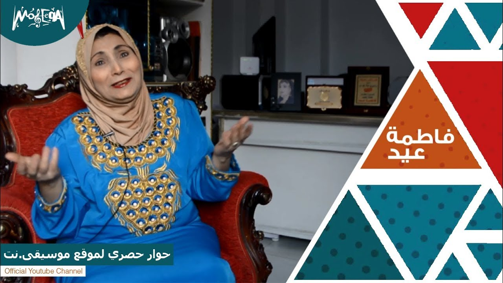
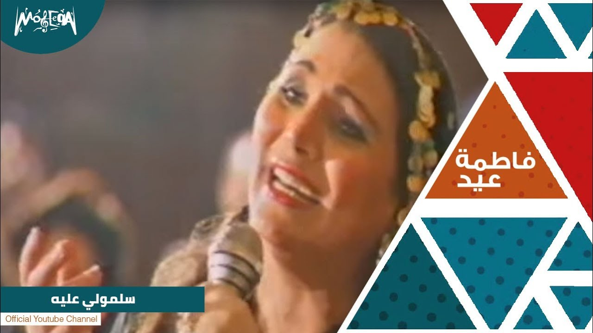

Featured Songs

The star of authentic Egyptian folklore and the icon of "El Toto Nay"
One of the most well-known folk music artists in Egypt, she was born in Al-Qanayat, Sharqia Governorate. She is considered a key figure in Egyptian folk music, especially during the 1980s and 1990s.
She successfully captured and delivered the روح (spirit) of rural Egyptian music to a wide audience. She started singing at a young age in weddings and local celebrations, building her career from the ground up.
She has released more than 45 music albums and performed internationally in countries such as Tunisia, Morocco, Syria, Austria, Germany, and the United States. She also participated in numerous festivals, including performing at the Carthage Festival in Tunisia over 15 times.

لبرومو الرسمي لبرنامج " السيرة " - قصة حياة أسطورة الغناء الشعبي فاطمة عيد

اللقاء الكامل مع المطربة الشعبية فاطمة عيد في معكم مني الشاذلي

اللقاء الكامل مع المطربة الشعبية فاطمة عيد في صاحبة السعادة

اللقاء الكامل مع المطربة الشعبية فاطمة عيد في الستات مايعرفوش يكدبوا

اللقاء الكامل مع المطربة الشعبية فاطمة عيد في السفيرة عزيزة

اللقاء الكامل مع المطربة الشعبية فاطمة عيد في مساء dmc

اللقاء الكامل مع المطربة الشعبية فاطمة عيد في سيرة الحبايب

مجموعه من اللقاءات التلفزيونيه للمطربه الشعبية فاطمة عيد

مجموعه من الحفلات للمطربه فاطمة عيد

حفله نادي الضباط - فاطمة عيد
"Fatma Eid has a unique style that brings joy to everyone who listens to her. Her energy on stage is unmatched!"
"El Toto Nay is a masterpiece. I love the way Fatma Eid blends authentic Egyptian sounds with her amazing voice."
"An amazing artist with a very humble personality. Keep up the great work, Fatma Eid!"
"انت تعرف انك انت اللى خلتنى احب الاغانى 👍."
"اشتقنا لهذا الصوت الجميل و الرائع 💖"
"ابداااع و حلو كتير انتي فنانة من الطراز الأول ❤️💖."
"أغنية شعبية فريدة من نوعها . ماشاءالله يا فاطمة على صوتك الأصيل 🏆 الله يحفظك و صوتك النادر لم استطيع التوقف من استماع هذه التحفة الاكثر من رائعة 💖."
"والله زمان ماسمعناش اغنية جميلة فى زمن فية السمع و البصر الله الله عليك يا فاطمة رجعتنا للأيام الحلوة و للفن الراقى الحمدلله انو مازلتي انتي و اللى مثلك راقيين برااافو اغنية قمة الروعة 👍👍❤️❤️."
For Bookings and Inquiries
Keep In Touch